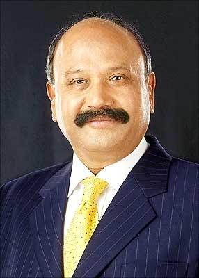

Grandhi Mallikarjuna Rao is a mechanical engineer, billionaire industrialist, and the founder chairman of GMR Group,a global infrastructure developer and operator based in India. Started in 1978, GMR Group is now present in 7 countries, active in energy, highways, large urban development and airports sectors, known for building and operating world class national assets.
G M Rao was born on 14 July 1950, in Rajam, Srikakulam district in Andhra pradesh, India. He was born in an upper-middle-class family whose main business interests involved commodities trading and a small scale jewelry business started by his father in Rajam. After graduating from Andhra University, Rao joined the Andhra Pradesh Government as a junior engineer.
He soon entered the trading of commodities as his entrepreneurial nature made it difficult for him to stay content with a mere day job. After developing good relations with suppliers and customers in the business of commodities trading, he acquired a failing jute mill at a bargain, this venture proved to be lucrative and allowed GM Rao is use leverage from local banks to acquire other assets. Eventually GM Rao divested his stake in a multitude of industries and started a bank named Vysya Bank in collaboration withING.
Rao eventually diluted his stake in ING Vysya by selling his stake in whole for 340 crores. The cash from the bank stake sale allowed his entry into the power business allowed Rao to build what would become India leading infrastructure asset developer, as GMR's most relevant competitor, GVK, is 6 times smaller by market capitalization, making GMR Group the leader in India as an airport developer by revenues, asset size, and market capitalization.
GM Rao received the Economic Times Entrepreneur of the year Award in 2007,.
Its CSR arm, GMR Varalakshmi Foundation, currently serves the underserved sections of society in 22 locations. He donated Rs.1540 crores in 2012 for charitable purposes. He mentioned in an interview that Warren Buffett is an inspiration for him to pledge is money in support of 'Giving back to society'
By donating Rs. 740 Crores in the year 2013, G M Rao was the third generous donor of corporate India for the year as per the China's Harun Report Inc.
GMR Varalakshmi Foundation (GMRVF), is the Corporate
Social Responsibility arm of the GMR Group. It’s objectives are to develop
social infrastructure and enhance the quality of life of communities around the
locations that has the Group’s presence. This non-profit (Section 25) company
has its own professional staff selected from top academic and social work
institutions, and is Governed by Group Chairman, GMR Group